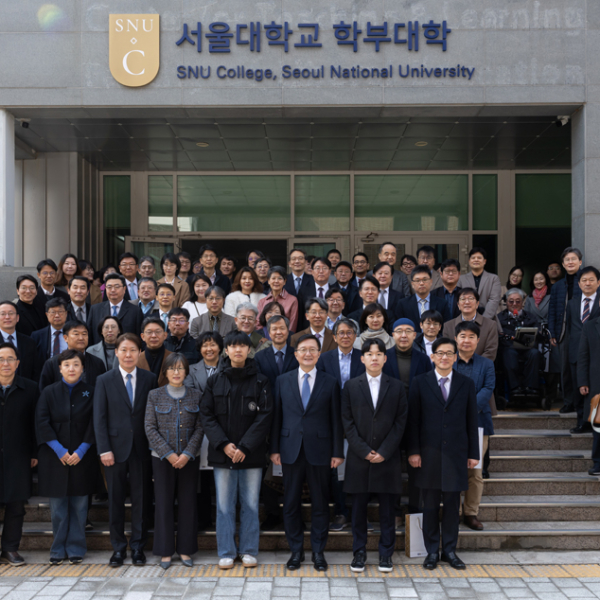
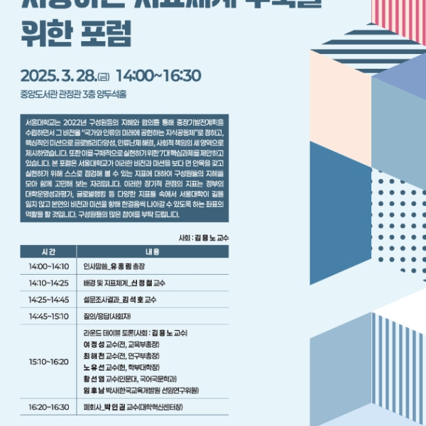

서울대학교 대학혁신센터는 2022년에 수립된 중장기 발전계획을 기반으로, 대학의 지속적이고 효과적인 성장을 관리하고 지원하는 전략 방안을 마련하고 자 정책 과제를 기획, 추진하고 있다. ‘국가와 인류의 미래에 공헌하는 지식공 동체’라는 비전 아래 ▲대전환 시대를 이끌어갈 글로벌 리더 양성 ▲국가와 인류 가 직면한 난제 해결을 위한 연구 ▲포용과 소통을 통한 사회적 책임 실현을 핵 심 과제로 삼고 있다. 서울대학교 대학혁신센터는 과제를 실행에 옮기기 위한 정책으로 ‘서울대학교 교육기구 종합진단 지표체계 개발’을 하고 있다. 이를 통 해 대학 교육과 조직 운영 전반에 대한 체계적 진단 체계를 구축하고자 한다.
3월 28일(금), 중앙도서관 관정관 양두석홀에서 ‘중장기 발전계획을 기반으로 한 지표체계’를 주제로 공개 포럼이 개최됐다. 발표와 토론 중심으로 구성된 포럼은 참석자 간 다양한 의견이 활발히 논의됐다. 유홍림 총장은 “우리가 대학에서 말 하는 자유란 적극적인 노력을 통해 혁신을 이뤄내는 것이고, 대학 내부에 체계를 갖추고 점검과 평가를 수행하는 과정은 매우 중요하다”라며 활동 의미를 강조하 고 격려의 뜻을 전했다.

‘서울대학교 장기발전 비전을 지향 하는 지표체계 구축을 위한 포럼’ 포스터
신정철 교수(교육학과)는 ‘고등교육의 변화 속에서 본 장기적 평가지 표와 활용 전략’을 발표했다. 신 교수는 발표 서두에서 고등교육의 역 사와 세계적 동향을 소개하고, 현재의 대학 평가 지표가 “달성 가능한 성과나 수치 위주로 지표가 구성되면 장기적인 좌표 역할을 하는 질문 들은 사라지고 만다”라며 “멀리 보기 위해서는 대학이 근본적으로 어떤 가치를 따라야 하는지 고민해야 한다”라고 말했다. 그는 대학의 기능과 역할을 반영한 평가지표 체계를 제안하고, 투입(input), 과정(throughput) , 산출(output), 사회적 영향력(impact)의 네 가지 범주로 구성된 지표 설 계 방향을 설명했다. 또한, 평가 방식을 양적 및 질적 지표, 설문 기반 지표 로 균형 있게 활용할 계획임을 밝혔다. 평가지표는 단기(매년), 중기(4~6년) , 장기(6년 이상)의 목표로 구분해 체계적으로 관리하고, 지속적으로 개선할 예정이다.
김석호 교수(사회학과)는 ‘서울대학교 종합진단 지표에 대한 대학교원 인식 조사’ 설문 결과를 발표했다. 서울대학교의 핵심 과제 달성을 위한 7대 과제에 대한 인 식과 우선순위를 중심으로, 지난 2월 본교 전임교원 337명의 응답을 받아서 분석 한 내용이다. 교수들은 ▲대학 운영 시스템의 혁신과 재정 확충 ▲국가와 인류 난제 해결을 위한 도전적 융합연구 ▲국가와 인류를 위한 사회공헌 확대 순으로 중요도 를 높게 평가했다. 그 외 과제로는 ▲전략적이고 질적인 국제화 ▲전공·학과(부)· 단과대학(원) 간 장벽 없애기 ▲생애 전 주기에 걸친 개방적 교육 체계 수립 ▲다 양성이 존중되는 포용적 무장벽 캠퍼스 구현이 포함됐다. 교육, 연구, 국제화, 사회적 기여의 4개 영역에서 무엇을 중요하게 실천해야 하는지도 함께 조사했는데 , 영역별 가중치와 세부적인 의견은 단과대학마다 다르게 나타났다. 주관식 응답 에서는 연구비 확충, 행정 지원 개선, 세계시민 의식, 인성 교육 등 다양한 건의 가 활발하게 이뤄졌다.
발표하는 신정철 교수(좌), 김석호 교수(우)
행사 후반부는 라운드테이블 토론이 진행됐으며, 참석 교수들은 대학 평가 체계에 대한 종합적인 견해를 공유했다. 최해천 교수(기계공학부)는 “좋은 평가란 준비 과정에서 우 리 자신을 돌아보도록 하는 평가이다”라며 “양적 평가보다는 질적 평가가 필요하고, 내 부 평가와 외부 평가를 병행하는 것이 바람직하다”라고 강조했다. 노유선 교수(생명과학 부)는 “여러 대학을 서열화하는 것이 아니라 각 대학의 성장을 측정하는 수직적 평가가 추가돼야 한다”라고 의견을 밝혔다. 여정성 교수(소비자학과)는 “학교의 구성원은 늘 변화 하기 때문에 연구 내용을 시계열로 관찰하면 좋겠다”라고 첨언했다.
라운드테이블 토론자들
연구 영역에서 최해천 교수는 “논문 저술에 치중하기보다는 연구하는 즐거움을 찾는 대학이 되어야 한다”라며 “대학원 졸업 요건이나 교원 승진 기준 등 규정부터 바꿔나가야 할 것이다 ”라고 짚었다. 또한, 외국인 학생과 교수의 비율이 낮은 현실을 언급하며 국제 공동 연구 활 성화의 필요성을 역설했다. 노유선 교수 역시 “대학이 기초 체력을 키워 일관되게 나아갈 때 QS 순위*와 같은 국제 평가에서도 긍정적인 변화가 있을 것이다”라고 덧붙였다.
교육 영역은 모집 단위 광역화에 대한 낮은 동의율이 주요 쟁점으로 부각됐다. 기초·전문 분야의 학문적 토대를 지키자는 의견과 융복합 교육을 강화하자는 요구가 혼재된 결과로 해석된다. 박태 균 교수(국제대학원)는 “학생들이 원하는 과목이 무엇인지, 대학에서 정말 가르쳐야 하는 과목은 무엇인지 조사하고, 어디에 중점을 둬서 지표를 만들 것인지 합의점을 도출해야 한다”라고 발의했 다. 여정성 교수는 관련 의제를 단과대학별로 구분한 정밀분석을 요청했다. 임후남 박사(한국교육개 발원)는 대학의 사회적 책무를 강조했다. 그는 “지속 가능한 사회경제적 발전에 기여하는 관점에서 졸업생의 기업 진출, 산학협력, 창업·특허와 기술 이전 등도 대학의 중요한 성과로 분석하고 반영해 야 한다”라고 제안했다.

폐회사를 전하는 박인권 교수
현재까지 수행된 연구는 본교에서 지향하는 장기적 성장과 혁신을 위한 기반을 다지는 출발점이라 할 수 있다. 황선엽 교수(국어국문학과)는 “서울대학교가 양적 확대를 넘어 질적 성장으로 나아가야 하는 데에는 구성원 모두가 공감하고 있지만, 그것을 어떻게 수치화해서 측정할 것인지는 굉장히 어려운 과 제이다”라며 “연구진 내부에도 아이디어가 많으며, 기존 지표들을 적절히 참고해서 발전시켜 나가고 자 한다”라고 전했다. 행사를 마치며 박인권 대학혁신센터장(도시계획학과)은 “앞으로 교수 외에도 다 양한 학내 구성원과 외부 이해관계자들이 참여할 수 있도록 조사 범위를 확대하고, 데이터베이스를 구 축해 지속적인 피드백 체계를 마련할 계획이다”라고 밝혔다. 대학의 진정한 성장과 발전이 단계적으로 추진되는 가운데, 모두의 관심과 지혜가 필요한 시점이다.
*QS 세계 대학 랭킹(QS World University Rankings)은 영국의 대학평가기관 Quacquarelli Symonds 가 매년 발표하는 대학 순위표로, 세계에서 가장 영향력 있는 대학평가로 꼽힌다.
서울대학교 학생기자단
최하영 기자
harongeee@snu.ac.kr